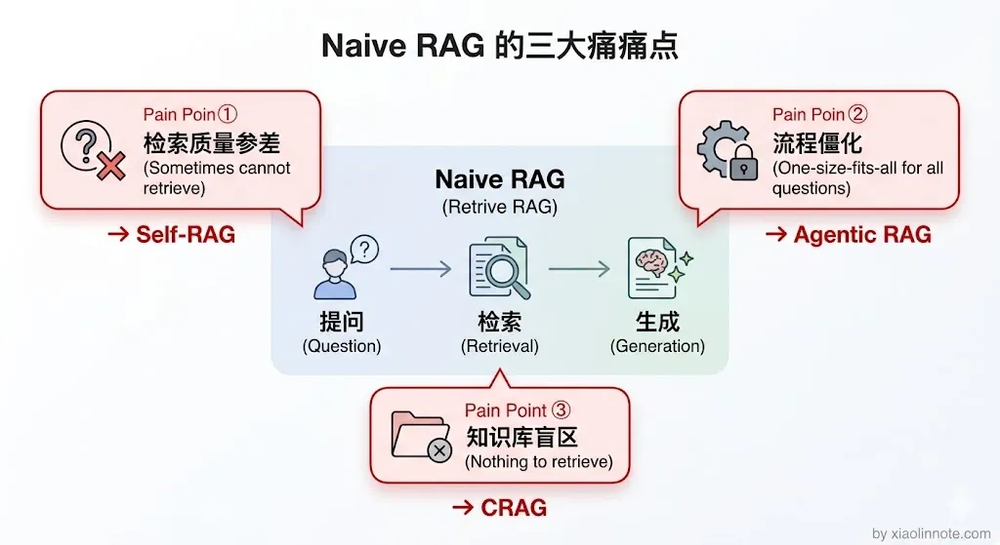
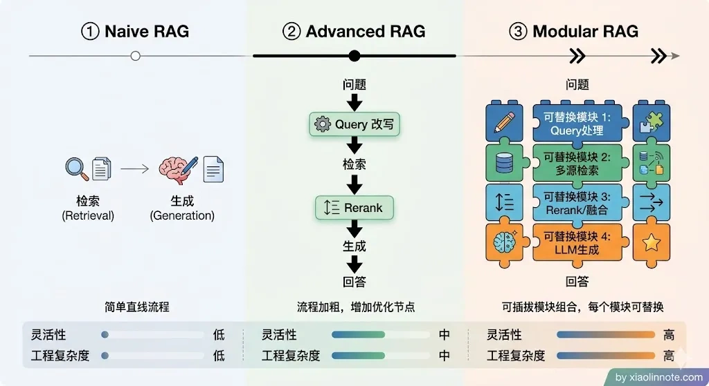
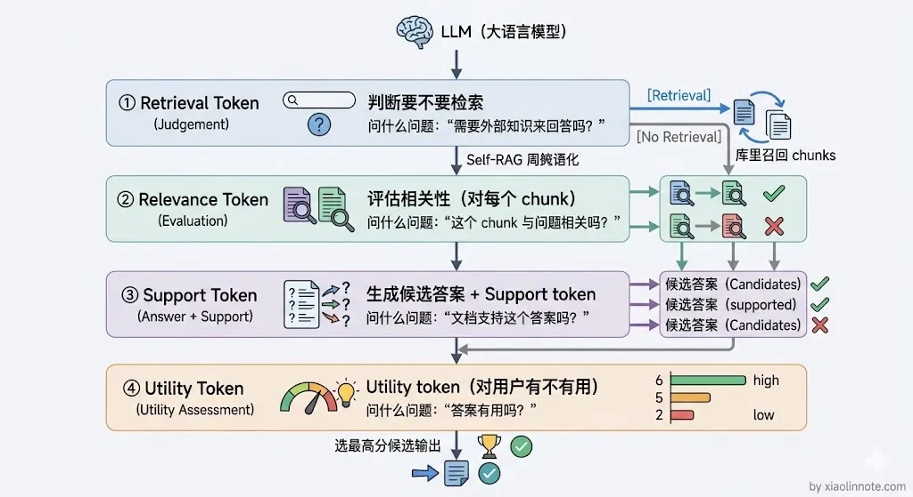
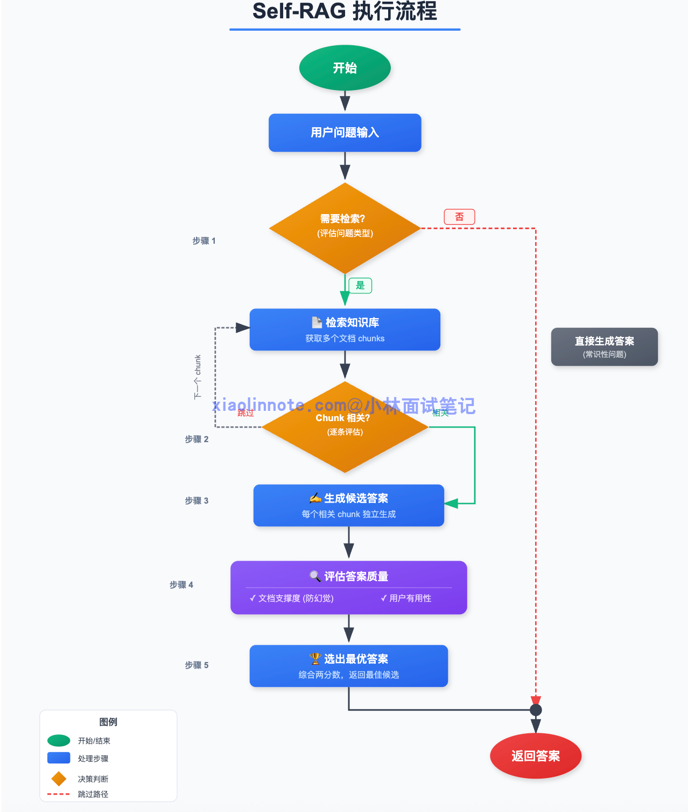
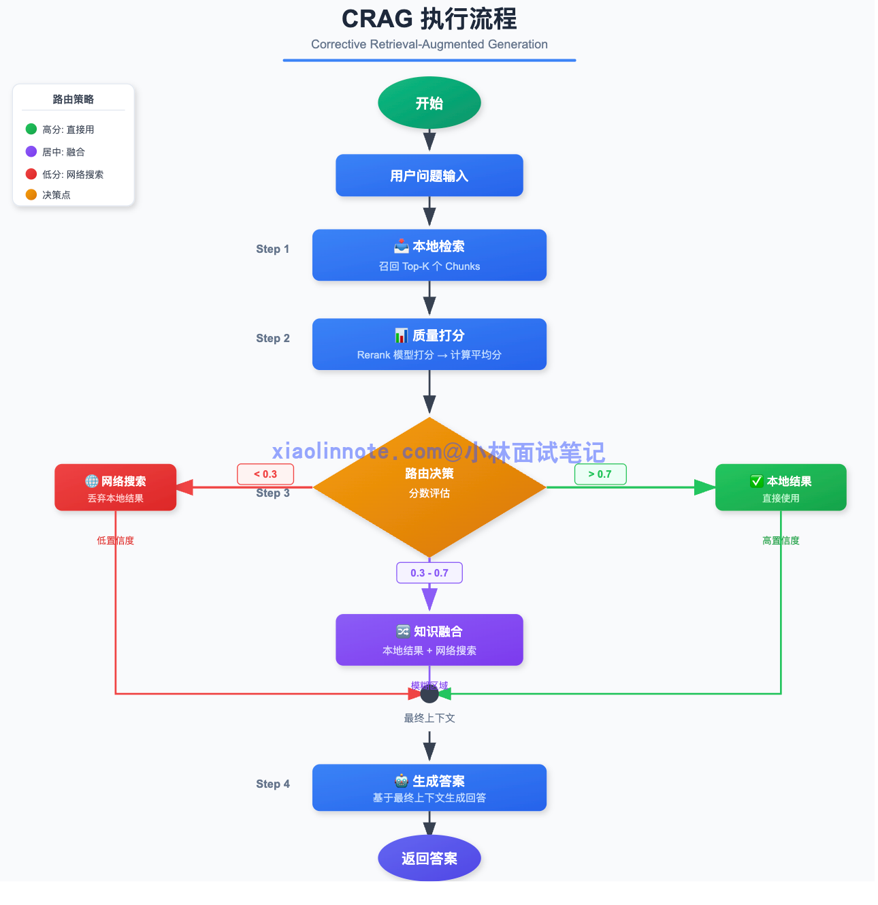
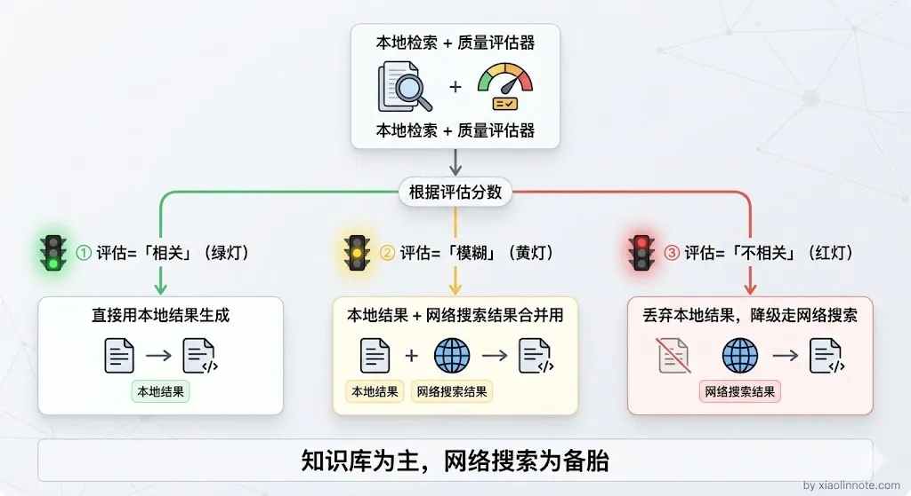
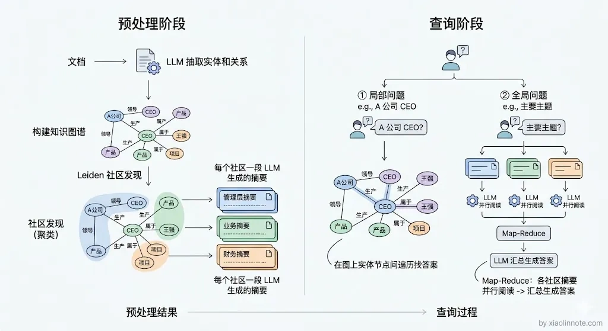
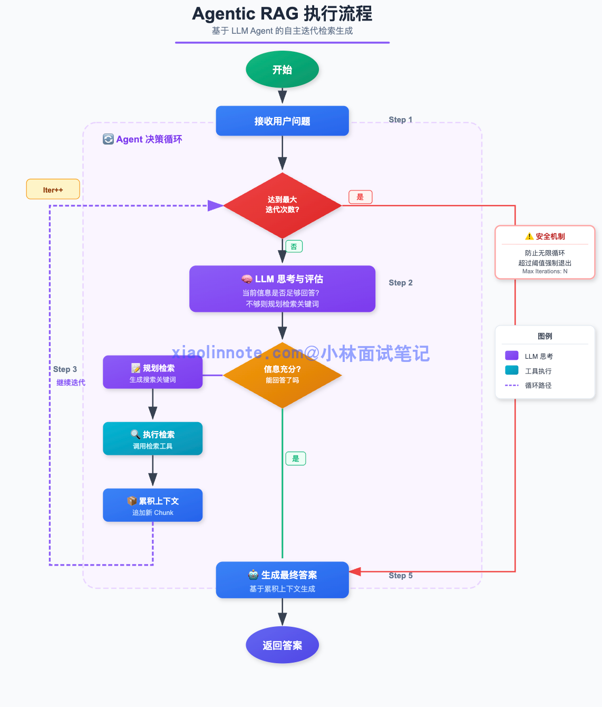
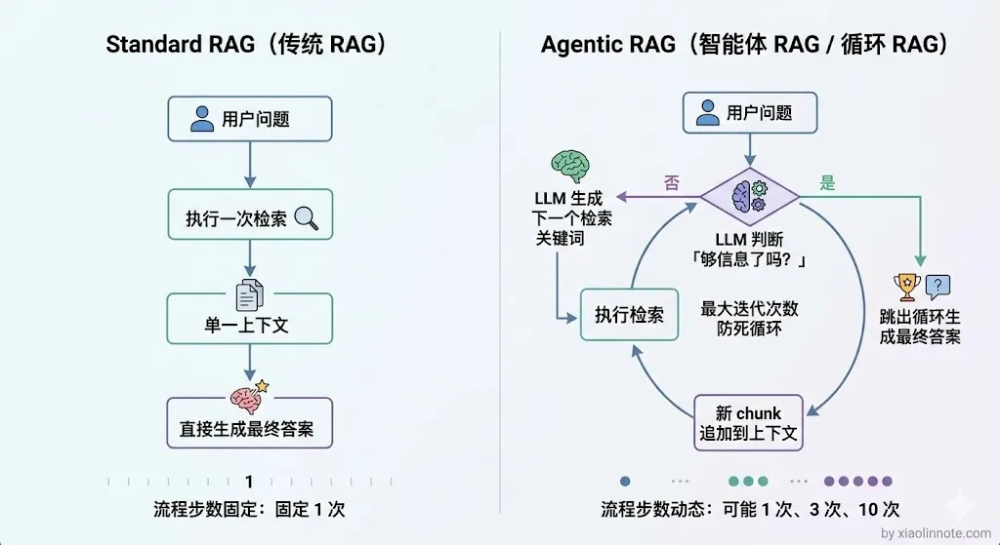

了解哪些更复杂的 RAG 范式？
👔面试官：你了解哪些更复杂的 RAG 范式？除了最基本的检索加生成，还有什么更高级的玩法？
🙋♂️我：呃，我觉得 Advanced RAG 就是最复杂的了吧，加个 Rerank 和 Query 改写基本上就到头了，其他都是工程优化。
👔面试官：Advanced RAG 只是在固定流程上打补丁，你听说过 Self-RAG、CRAG、Agentic RAG 这些范式吗？它们解决的是完全不同层面的问题。
🙋♂️我：Self-RAG 我看过一点，好像就是让模型自己判断要不要检索，但具体怎么实现的我不太清楚，CRAG 和 Agentic RAG 没了解过。
👔面试官：连范式演进都没搞清楚就来面试了？Self-RAG 是模型自主决策检索，CRAG 是检索质量差时自动纠错降级，Agentic RAG 是把 RAG 做成 Agent 支持多轮动态检索，这些都是生产系统里用得很多的方案，你得好好补补课。
面试官的问题其实是在考察你对 RAG 范式演进的理解深度，不只是背名字，而是要讲清楚每种范式解决了什么痛点、怎么解决的。下面我来系统梳理一下。
💡 简要回答
在我的了解里，RAG 的发展经历了三代演进：Naive RAG 是基础的检索加生成；Advanced RAG 在检索前后都加了优化，比如 Query 改写、Rerank、混合检索这些；Modular RAG 是把各个环节做成模块可以任意组合。
在这之上还有几个我觉得值得关注的高级范式。
Self-RAG 是让 LLM 自己来决定要不要检索，以及评估检索质量；CRAG 是检索质量差的时候自动降级到网络搜索；GraphRAG 是微软推的方案，用知识图谱的社区发现和层次摘要来增强全局理解能力；Agentic RAG 是把 RAG 做成 Agent，支持多轮的动态检索。
📝 详细解析
什么是 RAG 范式？
「范式」这个词听起来很学术，其实就是「一套固定的处理流程和设计思路」。RAG 范式，就是指从「用户提问」到「生成答案」这整条链路上，各个环节的组织方式和工作逻辑。
不同的 RAG 范式，本质上是在回答同一个问题：在「检索」和「生成」之间，系统应该怎么协调、怎么决策、怎么处理中间的各种异常情况？
最朴素的 RAG 范式是这样的：用户提问 -> 向量检索 -> 拼 prompt -> LLM 生成答案。这套流程一两天就能跑起来，大多数教程演示的都是这个形态。但一旦到了真实业务场景，问题就来了。
为什么需要不同的 RAG 范式？
朴素 RAG 的问题，随着使用场景复杂度的增加会越来越明显。

第一个问题是检索质量参差不齐。用户的提问方式千变万化，有些问题一次检索就能找到正确答案，有些问题向量检索完全召不到相关内容，但系统不会区分，一律把检索结果喂给 LLM。然后呢？LLM 就会在低质量上下文上胡说八道，而用户完全不知道答案有没有依据。
第二个问题是所有问题都走同一套流程，太死板。有些问题根本不需要检索，比如「你好」「今天天气怎么样」，强行去知识库里找毫无意义；有些复杂问题需要多轮检索才能拼出完整答案，而朴素 RAG 一律只检索一次。然后呢？该省的地方没省，该深挖的地方浅尝辄止，结果既浪费又不准。
第三个问题是知识库覆盖有盲区。知识库里永远不可能有所有答案，当找不到相关内容时，朴素 RAG 要么让 LLM 编造答案，要么返回一个风马牛不相及的回答。然后呢？用户拿到的是一个自信满满的错误答案，体验很差。
你可能会想，这些问题用前面讲的 Advanced RAG 手段（Query 改写、Rerank、混合检索）不就能解决了吗？确实能缓解，但它们有一个共同的假设：流程是固定的，只是每个环节做得更好。
而真正复杂的场景需要的是「流程本身能根据情况调整」，什么时候该检索、检索结果不行怎么办、需不需要再检索一次，这些决策需要系统自己做，而不是靠人预先写死。这就是高级范式要解决的问题。
这三个问题，催生了不同思路的 RAG 范式：有的在「如何检索」上做文章，有的在「要不要检索」上加判断，有的在「检索不到时怎么兜底」上下功夫。理解这些范式，本质上是理解面对不同场景约束时，系统设计者各自找到的解法。
三代 RAG 的演进
RAG 的发展经历了三代，每一代都是在上一代的痛点上演进，但演进的方式越来越系统化。

最早的形态叫 Naive RAG，逻辑非常直白：用户提问 -> 向量检索 -> 拼 prompt -> LLM 生成。这套流程像搭积木的第一步，把各个环节拼在一起就能跑，两天就能上线一个 Demo。但它什么都没优化：检索召回什么就送什么，用户提问写得差就找得差，找到的内容有没有用也不管，全部一股脑塞给 LLM，幻觉和偏差就是这样来的。
意识到问题之后，Advanced RAG 出现了，核心思路是在「检索前」和「检索后」各加一道工序。检索前加 Query 改写和扩展，把用户口语化的提问打磨成更容易命中知识库的形式；检索后加 Rerank 精排和内容压缩，把召回内容里最相关的几条筛出来，不相关的过滤掉，减少喂给 LLM 的噪音。这套方案不用改框架，只需在原有流程上插入几个步骤，工程改动小，效果提升明显。目前大多数生产系统用的都是这个形态。
很多人以为 Advanced RAG 就是 RAG 的终极形态了，其实不是。Advanced RAG 有一个隐含的假设——流程是固定的「检索前优化 -> 检索 -> 检索后优化 -> 生成」，不管用户问什么，都走这套流程。但真实场景中，不同问题需要不同的处理策略，这就是 Modular RAG 要解决的。
再往后发展就是 Modular RAG，思路变了，不再是在固定流程上打补丁，而是把 RAG 的各个环节拆成可以独立替换的模块，像乐高一样按需组合：检索模块可以选向量检索、BM25 或图检索；改写模块可以选 HyDE、Step-back 或多 Query 扩展；生成模块可以是普通输出，也可以是带引用的结构化输出。不同业务场景挑不同模块组合，灵活性大幅提升。LlamaIndex 的 Workflow 和 LangGraph 都是这个设计思路的具体实现。
理解了三代演进，再看后面几种高级范式就有了参照系，它们都是在 Modular RAG 的「灵活组合」思路上，针对特定痛点做了更深度的设计。
高级范式
在这之上还有几个值得关注的高级范式，每一种都对应了朴素 RAG 的一个特定痛点：
Self-RAG：LLM 自己决定要不要检索
前面提到朴素 RAG 的第二个痛点是「所有问题都走同一套流程，太死板」。Self-RAG 就是专门解决这个问题的。
普通 RAG 不管用户问什么都去检索，但有些问题根本不需要检索（比如「1+1等于几」），有些检索结果根本不相关。Self-RAG 训练了一个特殊的 LLM，它会自主决定：

- 当前问题需不需要检索？（Retrieval token）
- 检索回来的内容和问题相不相关？（Relevance token）
- 生成的答案有没有幻觉？（Support token）
- 最终答案质量够不够好？（Utility token）
Self-RAG 的执行流程如下：

- 判断是否需要检索：LLM 先评估这个问题要不要查知识库。如果是常识性问题或者不需要外部信息，直接生成答案。
- 检索并逐条评估相关性：对每一个召回的 chunk，LLM 独立判断「这段内容和问题相关吗」，不相关的直接跳过。
- 基于相关 chunk 生成候选答案：每个相关 chunk 各自生成一个候选答案。
- 评估答案质量：对每个候选答案，LLM 打两个分，有没有文档支撑（防幻觉）、答案对用户有没有用。
- 选出最优答案返回：综合两个分数，选出最好的那个候选答案。
这套机制有一个很容易被忽略的前提：那四种 reflection token 不是现成 LLM 自带的，需要在一个专门构造的数据集上，对基础 LLM 进行监督微调，把这些特殊 token 作为新词表的一部分训练进去。
换句话说，Self-RAG 不能拿一个普通的 GPT-4 直接「套用」，要么你拿 Self-RAG 论文开源的微调版本（基于 Llama2-7B/13B），要么自己按论文的流程造数据做微调。这是它和 CRAG、Agentic RAG 很不一样的地方，后者都可以在通用 LLM 上直接跑。
好处也很明显：不需要检索的问题直接回答，省了检索开销；检索结果不相关时能识别出来，避免了基于错误上下文生成的幻觉。
CRAG（Corrective RAG）：检索质量差时自动纠错
Self-RAG 解决的是「要不要检索」的问题，那如果检索了但结果质量很差怎么办？
朴素 RAG 的第三个痛点：知识库覆盖有盲区。就会导致这种情况。CRAG 就是专门解决这个问题的。
CRAG 在检索完之后加了一个质量评估环节：如果检索到的内容质量高，正常走 RAG 流程；如果质量低，自动切换到网络搜索，用搜索结果代替知识库内容来回答问题；如果质量居中，把知识库结果和网络搜索结果都用上。
CRAG 的执行流程如下：

- 本地检索：先从知识库里召回 top-K 个 chunk。
- 质量评估：用一个轻量级的检索评估器（可以是专门训练的分类模型，也可以用 Rerank 模型的分数来近似）来判断检索结果和问题的相关程度。
- 三级路由决策：根据评估结果分成三档。评估为「相关」，直接用本地结果生成答案；评估为「不相关」，说明知识库没有覆盖这个问题，丢弃本地结果，降级走网络搜索；评估为「模糊」，把本地结果和网络搜索结果合并一起用，两者互补。具体的判断阈值需要根据业务场景来调，没有固定数值，核心思路是让系统能自动识别「检索结果靠不靠谱」并做出相应的降级决策。
- 生成答案：基于最终上下文生成回答。
这个方案的核心价值在于「兜底」：知识库覆盖不到的问题不会直接乱答，而是自动去网上找答案，大幅提升了系统的健壮性。很多人以为 RAG 系统只能用本地知识库回答问题，CRAG 打破了这个限制，它把知识库当主力，把网络搜索当备胎，两者配合使用。

GraphRAG：用知识图谱增强全局理解
Self-RAG 和 CRAG 解决的都是「检索策略」层面的问题，但还有一种瓶颈是检索方式本身的局限。
普通向量检索只能召回「和问题直接相关的文档片段」，对于需要全局理解的问题（比如「这批文档的核心主题是什么」「A 公司和 B 公司之间有什么关联」），单纯的向量检索只能找到局部信息，无法把散落在多处的知识串联起来。GraphRAG 就是微软在 2024 年 7 月发布论文的一套方案，它把知识图谱、社区发现和层次摘要这几样现成工具组合起来解决这个问题，核心价值是「系统化组合」而不是单点发明。
GraphRAG 的核心做法分两步。预处理阶段，先用 LLM 从文档里抽取实体和关系，建成知识图谱，然后用 Leiden 等社区发现算法对图谱中的实体做聚类，把紧密关联的实体分成一个个「社区」，再对每个社区生成一份 LLM 摘要，描述这个社区里的实体之间是什么关系、整体在讲什么。这些社区摘要会形成多层的层次结构，从细粒度到粗粒度都有覆盖。
检索阶段，GraphRAG 支持两种查询模式。对于局部问题（比如「A 公司的 CEO 是谁」），可以直接在知识图谱中做实体查找和关系遍历；对于全局问题（比如「这些文档的主要主题有哪些」），则用 Map-Reduce 的方式，先让 LLM 分别阅读各社区的摘要提取相关信息，再汇总生成最终答案。这种「社区摘要 + Map-Reduce」的设计，是 GraphRAG 区别于普通知识图谱方案的核心创新。
你可能会问，为什么向量检索搞不定全局性问题？因为向量检索本质上是在做「一对一匹配」，用一个 query 向量去和一个 chunk 向量比较距离，它擅长找到和问题直接相关的局部片段，但无法理解整个知识库的宏观结构和跨文档的关联关系。
GraphRAG 通过预先构建社区摘要，把全局信息提前「蒸馏」好了，查询时不需要遍历所有文档就能回答全局性问题。

适合知识之间关联性强、需要全局视角的场景，比如金融领域的企业关系分析、医疗领域的药物-疾病-症状关联查询、大规模文档集的主题归纳。代价是构建知识图谱和社区摘要需要大量 LLM 调用，预处理成本较高。
Agentic RAG：把 RAG 做成 Agent
前面几种范式虽然各有创新，但都有一个共同点：流程的步骤是预先定义好的，最多是根据条件做分支选择。但有些问题复杂到连「需要检索几次」「每次检索什么」都无法预先定义，需要 LLM 根据中间结果动态决定下一步怎么做。这就引出了 Agentic RAG。
普通 RAG 是固定的「检索一次 -> 生成」的流程，但有些问题需要多轮检索：第一次检索发现信息不够，需要追加检索；检索结果互相矛盾，需要再检索来验证；问题本身是多步骤的，每一步都需要检索不同的内容。
Agentic RAG 把 RAG 嵌入 Agent 循环，LLM 可以自主决定：要不要再检索一次、用什么关键词检索、检索结果是否足够、什么时候可以生成最终答案。
Agentic RAG 的执行流程如下：

- 接收问题，进入循环：LLM 拿到用户问题，开始 Agent 决策循环。
- LLM 决定下一步动作：根据当前已收集到的上下文，LLM 判断，信息够了吗？如果不够，下一步该搜什么关键词？
- 执行检索，累积上下文：按 LLM 指定的关键词检索，把新召回的 chunk 追加到已有上下文里。
- 重复判断，直到信息充分：LLM 每轮都重新评估「现在能回答了吗」，不够就继续检索，够了就生成答案。
- 生成最终答案：信息充分后退出循环，基于所有累积的上下文生成回答。为防止死循环，设置最大迭代次数兜底。
这套机制特别适合需要多步骤推理的复杂问题，比如「帮我分析 A 公司最近三年的财报，找出营收增速放缓的根本原因」，这类问题需要多次、有针对性地检索不同维度的内容，一次检索完全不够。
和前面几种范式相比，Agentic RAG 最大的区别在于「流程不是写死的，而是 LLM 在运行时自己决定」。如果说 Self-RAG 是给 RAG 加了一个「要不要检索」的开关，CRAG 是加了一个「检索不好怎么办」的兜底，那 Agentic RAG 是把整个检索流程变成了一个可以不断循环、不断调整的智能体。

把几种高级范式的特点对比一下，选型时有个参考：
| 范式 | 核心创新 | 适合场景 | 工程复杂度 |
|---|---|---|---|
| Advanced RAG | Query 改写 + Rerank | 大多数生产场景 | 低 |
| Self-RAG | LLM 自主决策检索 | 问题类型多样、部分不需要检索 | 高（需特殊训练模型） |
| CRAG | 检索质量差时降级网络搜索 | 知识库覆盖不全的场景 | 中 |
| GraphRAG | 社区发现 + 层次摘要，支持全局查询 | 实体关系复杂、需要全局理解的场景 | 高（图构建 + 摘要成本大） |
| Agentic RAG | 多轮动态检索 | 复杂多步骤问题 | 中（Agent 框架） |
🎯 面试总结
回到面试官的问题，Advanced RAG 远不是终点，它只是在固定流程上做了检索前后的优化。真正的高级范式是针对朴素 RAG 的三大痛点分别给出了系统性的解法。
Self-RAG 解决「不是所有问题都需要检索」的问题，让 LLM 自主决策；CRAG 解决「检索质量差时怎么办」的问题，自动降级到网络搜索兜底。
GraphRAG 解决「全局理解和跨文档关联」的问题，用社区发现和层次化摘要补上向量检索只能做局部匹配的短板；Agentic RAG 解决「复杂问题需要多轮动态检索」的问题，把 RAG 做成 Agent 循环。
回答时不要只罗列名字，要讲清楚每种范式解决了什么痛点、核心机制是什么、适合什么场景，这才是面试官想听到的。